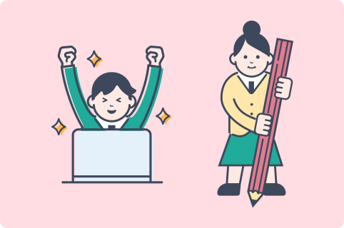

W
e
b
専
攻
へ
よ
う
こ
そ
！
Web専攻へ
ようこそ!

-
Webデザインを作ることが好き！
-
コーディングが好き！
-
Webサイトを見ることが好き！
-
Web制作の授業を
受けることが好き！
Web専攻は、
そんな好きなことをさらに掘り下げて
じっくり学べます！
興味がある人はぜひWeb専攻に来てね！
Web専攻って？
Web専攻って何するの？
Web専攻は、Webデザインを作りまくったり、自分のWebデザインをコーディングしたり、自分でアプリを考えてデザインをしたりするコース！
Web専攻ですること、気になる時間割、先生のことや作品紹介など、専攻を決める前に知ってほしいことやWeb専攻ならではの魅力をたっぷり紹介します！
先輩たちの声

体験談
Web専攻だけど実はコーディングが苦手……？専攻決めの決め手は……？
あなたの聞きたいリアルなWeb専攻が見れるかもしれません！
やっておけば良かったことをまとめた懺悔コーナーもあるよ！
作品ビフォーアフター
1年生課題の祇園牧場、歯医者、旅館たけ川、多良岳わさびをリデザイン！
もし1年生の時の課題をやり直すなら、こう直す！WEB専攻に入ってから成長できたよ！！
ポートフォリオ
就職活動で必ず必要なのが、
制作物をまとめた自分のWebサイト！
ポートフォリオがないと就職できないよ・・・
そこで！2年生のポートフォリオを
特別に大公開！
Web専攻においで
もしWebデザイン、
コーディングが苦手でも
先生たちが優しく、
丁寧に教えてくれるので大丈夫！
安心してWeb専攻に来てください！